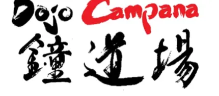

Centro de Enseñanza de Karate Do — Estilo Shorinryu Kyudokan de Okinawa
Cristian Lugani · Jean Jaures 983 · Tel. (54) (03489) 431664 · Campana · Bs. As. · Argentina
El Karate-do de la Familia Higa, enseñado en Campana.
Escuela Shorinryu Kyudokan de Okinawa — filial Campana, Buenos Aires. Una tradición transmitida de generación en generación, desde Shuri hasta acá.
Embusen — el trazado que deja cada forma. Cada sección de este sitio es una estación sobre esa línea.
La escuela
La Escuela de Karate-do Shorinryu Kyudokan de Okinawa, conocida ya como el Karate-do de la Familia Higa, es una escuela tradicional reconocida en todo el mundo por su historia, el transcurso del tiempo y por la tradición transmitida a través de los siglos.
El Karate-do Kyudokan, fundado por el maestro Yuchoku Higa, uno de los 10 Dan más famosos del mundo, tiene sus bases en la antigua Escuela Shorin o sea en el Shurite (la mano de Shuri).
Se trata de una escuela tradicional pero al mismo tiempo evolutiva en el sentido que si bien se ha transmitido de generación en generación, enriquece constantemente su contenido técnico, sobre todo en lo concerniente al arte del movimiento, sin perder su esencia original.
En la Ciudad de Campana, Buenos Aires, Argentina; el Profesor Cristian Lugani (2do. Dan) es representante para dicha ciudad.

La línea no se corta
Del Shurite de Okinawa al dojo de Campana: la misma escuela, pasada de mano en mano.
-

Yuchoku Higa
Fundador · 10º Dan · Shuri, Okinawa
-

Jintatsu Higa
Trajó la escuela a la Argentina
1938 -

La familia Higa
La escuela sigue, de generación en generación
-

Cristian Lugani
2do. Dan · representante en Campana
El recorrido
Las estaciones del sitio, en el orden del recorrido.
El primer puesto de la línea está libre
Escribinos y vení a conocer el dojo. No hace falta experiencia previa: la línea empieza siempre en el mismo punto.
Sumate a la línea cristian@karatelugani.com.ar
SITIO 2001 · DATOS A CONFIRMAR